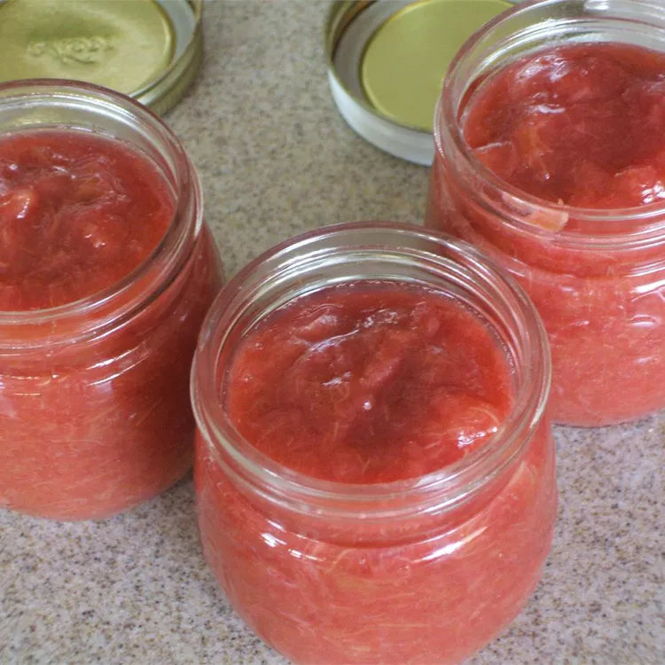

Rhubarb Jam

Description
This excellent rhubarb jam will surprise and delight.
Ingredients
- 2 ½ pounds fresh rhubarb, chopped
- 2 cups white sugar
- ½ cup water
- ⅓ cup orange juice
- 2 teaspoons grated orange zest
Steps
- Combine rhubarb, sugar, water, orange juice, and orange zest in a saucepan over high heat; bring to a boil. Reduce heat to medium-low; cook, stirring occasionally, until thick, about 45 minutes. Jam will continue to thicken as it cools.
- Ladle into hot sterile jars; seal with the lids and rings. Store opened jars in the refrigerator.